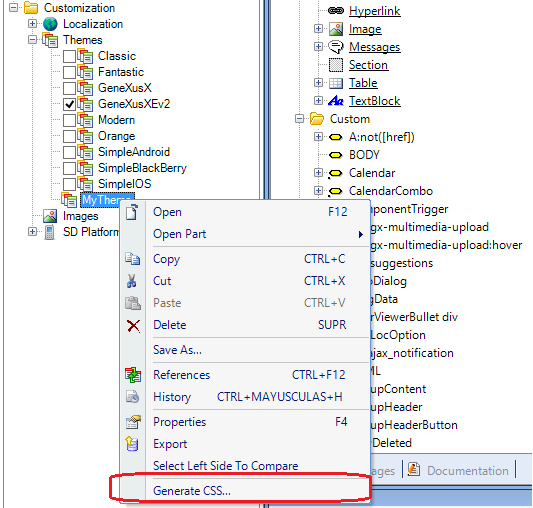
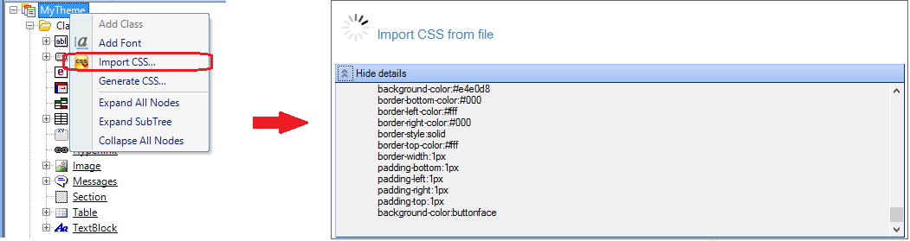

In order to facilitate the interaction with a Web designer an Import and Generate CSS options have been added in the Theme contextual menu. Scenario: interacting with the Web DesignerThe recommended interaction with the Designer is as follows: Create a new Theme from GeneXus and use the Generate CSS option to generate a .css file with the initial Theme definition:  This should be the first step; is it recommended for the designer to start working with an initial css file generated by GeneXus, because the CSS3 specification is very broad. Starting from scratch with a GeneXus Theme definition will define the initial classes and definitions for each control. Send the CSS file and all dependencies such as default images to the Web Designer. The designer will modify the default classes generated by GeneXus and will create new ones when needed to apply the desired look & feel for the controls. Make sure to keep the GeneXus class names to ease the import process. The Web designer sends back the new css definition and dependencies. Import the CSS file with the Import CSS option and add to the KB the external dependencies such as new images:  Continue applying the new classes to the GeneXus Controls as usual. Once the generated application is built, an equivalent css file will be generated taking into account all the modifications done by the Web Designer. See AlsoImport CSS option for Theme classes
|
| Backlinks |
| Import CSS option for Theme classes |